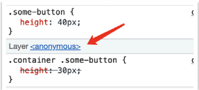
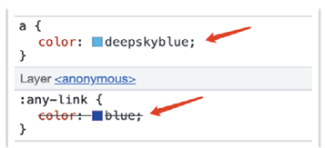
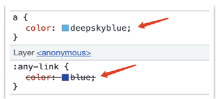
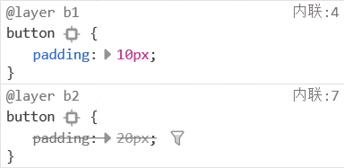
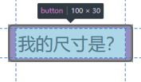
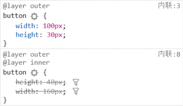
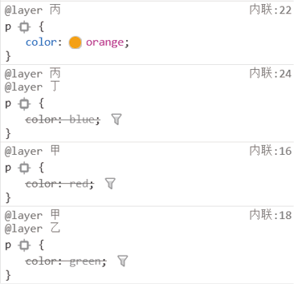

首页 > 编程笔记
CSS @layer规则详解
我们在实际开发的时候，经常会使用第三方组件。每个产品通常都有自己的 UI 样式风格，当引入第三方组件的时候，往往需要对这些组件的 UI 进行重置，例如换肤、变色等。此时，我们的做法是使用优先级更高的选择器进行覆盖，例如第三方组件中某个按钮的选择器是：
再举个例子，对于链接元素的CSS reset，有一种非常好的方法是使用:any-link 伪类，代码示意如下：
然而，这个伪类却很少有人使用，其原因只有一个，那就是伪类的优先级比较高，不太适合作为 CSS reset 使用，因为一旦设置这个伪类，某个 <a> 元素按钮想要被重置颜色，所需的选择器成本就会很高，提升了整个项目的选择器复杂度。
而有了 @layer 规则，上面这些问题就迎刃而解了。我们只要将希望获得低优先级的 CSS 代码放在 @layer 规则中，就无须再担心选择器优先级过高的问题，因为 @layer 规则的级联层级比常规的 CSS 代码的级联层级低。
参见这里的 CSS 代码示意：
从图中可以看出，虽然业务代码中的按钮选择器只有一个类名 .some-button，其优先级低于 .container 和 .some-button 这两个类名，但是由于代码所在的级联层级更高，因此，还是重置了 30px。其次，链接的颜色最终按照 a 标签选择器渲染了，再也不用担心 :any-link 伪类作为 CSS reset 代码会影响业务代码中 <a> 元素的样式设置了。
这就是 @layer 规则的作用，可以让 CSS 代码的级联层级降低，从而确保主业务的 CSS 代码不受第三方组件的 CSS 代码的影响。
下面重点介绍这 3 种命名级联层语法。
例如：
在默认情况下，@layer 规则内 CSS 声明的优先级取决于先后顺序，例如：
如果我们希望 b2 级联层的优先级高于 b1 级联层的优先级，则使用多命名语法设置好先后顺序就可以了。
如果希望导入其他 CSS 文件的低优先级，可以这样设置：
此时，example.css 中的所有 CSS 声明的优先级都低于常规设置的 CSS 声明。其中 layer() 函数中的名称可以自行定义，如果想要调整 layer(some-name) 的优先级，可以参照多命名语法的用法。例如：
此时在开发者工具的样式面板中可以看到下图所示的 CSS 代码优先级覆盖关系。
只需要记住这样一句话：内层 @layer 规则的优先级由外层 @layer 规则决定。例如下面这个例子：
真实渲染的覆盖关系如下图所示：
因此，最终 <p> 元素应用的 color 属性值是 orange。
.container .some-button { height: 30px; }
当需要重置的时候，可能就会使用类似于下面的选择器，通过增加选择器复杂度的方式进行重置。
.reset .container .some-button { height: 40px; }
这就会使我们的 CSS 代码变得很臃肿，维护成本上升，同时过于复杂的选择器也使 CSS 渲染的性能不是很好。再举个例子，对于链接元素的CSS reset，有一种非常好的方法是使用:any-link 伪类，代码示意如下：
:any-link { color: darkblue; }
:any-link:hover { color: blue; }
其语义明确，匹配精准，且无须担心 :visited 伪类的干扰。然而，这个伪类却很少有人使用，其原因只有一个，那就是伪类的优先级比较高，不太适合作为 CSS reset 使用，因为一旦设置这个伪类，某个 <a> 元素按钮想要被重置颜色，所需的选择器成本就会很高，提升了整个项目的选择器复杂度。
而有了 @layer 规则，上面这些问题就迎刃而解了。我们只要将希望获得低优先级的 CSS 代码放在 @layer 规则中，就无须再担心选择器优先级过高的问题，因为 @layer 规则的级联层级比常规的 CSS 代码的级联层级低。
参见这里的 CSS 代码示意：
@layer {
.container .some-button { height: 30px; }
:any-link { color: darkblue; }
:any-link:hover { color: blue; }
}
/* 业务代码 */
.some-button { height: 40px; }
a { color: deepskyblue; }
此时相关的 CSS 代码在浏览器的优先级层级关系如下图所示。


图 1 <a>元素优先级高于:any-link伪类

图 1 <a>元素优先级高于:any-link伪类
从图中可以看出，虽然业务代码中的按钮选择器只有一个类名 .some-button，其优先级低于 .container 和 .some-button 这两个类名，但是由于代码所在的级联层级更高，因此，还是重置了 30px。其次，链接的颜色最终按照 a 标签选择器渲染了，再也不用担心 :any-link 伪类作为 CSS reset 代码会影响业务代码中 <a> 元素的样式设置了。
这就是 @layer 规则的作用，可以让 CSS 代码的级联层级降低，从而确保主业务的 CSS 代码不受第三方组件的 CSS 代码的影响。
@layer语法
@layer 这个 AT 规则（CSS at-rule）的语法如下：
@layer {rules}
@layer layer-name {rules};
@layer layer-name;
@layer layer-name, layer-name, layer-name;
其中，@layer {rules} 语法在前文出现过，没有任何层级名，称为匿名级联层，而下面 3 种语法均需要自定义级联层的名称，称为命名级联层。下面重点介绍这 3 种命名级联层语法。
1) 命名带规则语法
这种语法和匿名级联层语法的唯一区别就是多了一个名称，便于开发人员识别与管理，从性质上来讲，有点类似于编程语言中的变量。例如：
@layer button {
.container .some-button {
height: 30px;
}
}
@layer link {
:any-link {
color: blue;
}
}
此时，我们可以使用下面的单命名语法或者多命名语法来灵活调整不同级联层的优先级顺序。如果我们没有这样的需求，则可以直接使用匿名级联层语法。2) 单命名语法
@layer layer-name 主要用于灵活设置 @layer 规则之间的优先级顺序。例如，有一个级联层，名为 peacock，希望这个级联层的优先级最低，但是，相关 CSS 代码的位置却无法控制，有可能靠前，也可能靠后，此时，@layer layer-name 这个语法就有用武之地了。
@layer peacock;
/* ……大量的CSS代码…… */
/* ……大量的CSS代码…… */
/* ……大量的CSS代码…… */
/* 虽然我位置靠后，但我优先级最低 */
@layer peacock {
.bottom-layer {
content: 'hello world'
}
}
上面这段 CSS 代码，虽然 @layer peacock{} 出现在 CSS 语句的最后面，但是由于在开头设置了 @layer peacock; 这行代码，peacock 这个级联层中的所有 CSS 代码的优先级都是最低的。3) 多命名语法
@layer layer-name, layer-name, layer-name 这个多命名语法和 @layer layer-name 这个单命名语法的作用是类似的，也是用来灵活调整 @layer 规则的整体优先级的。在默认情况下，@layer 规则内 CSS 声明的优先级取决于先后顺序，例如：
@layer b1 {
button { padding: 10px; }
}
@layer b2 {
button { padding: 20px; }
}
此时，如果页面中有一个 <button> 按钮元素，则此按钮元素的内间距是 20px，因为设置 padding:20px 的规则出现在后面。如果我们希望 b2 级联层的优先级高于 b1 级联层的优先级，则使用多命名语法设置好先后顺序就可以了。
@layer b2, b1;
@layer b1 {
button { padding: 10px; }
}
@layer b2 {
button { padding: 20px; }
}
此时，按钮元素匹配的 padding 内间距值是 10px，因为 @layer 多命名语法中 b1 出现在后面，优先级更高，参见下图所示的优先级覆盖效果。

图 2 多命名级联层语法的作用示意
图 2 多命名级联层语法的作用示意
使整个CSS变成@layer
对于第三方的 CSS 文件，尤其是那些通过 CDN 实现的绝对地址 CSS，我们是没办法修改相关的代码的，此时有办法使这部分 CSS 变成低优先级的级联层吗？答案是可以的，我们可以尝试使用 @import 语法。如果希望导入其他 CSS 文件的低优先级，可以这样设置：
@import './example.css' layer(example);也就是在传统的 @import 语法后面再添加一个 layer(some-name) 就可以了。
此时，example.css 中的所有 CSS 声明的优先级都低于常规设置的 CSS 声明。其中 layer() 函数中的名称可以自行定义，如果想要调整 layer(some-name) 的优先级，可以参照多命名语法的用法。例如：
layer button, example;
@import './example.css' layer(example);
@layer button {}
同时也支持匿名引入的语法，例如：@import './example.css' layer;
@layer规则的嵌套
@layer规则还支持更加复杂的嵌套语法。先看一个比较简单的嵌套例子：
@layer outer {
button {
width: 100px;
height: 30px;
}
@layer inner {
button {
height: 40px;
width: 160px;
}
}
}
此时，button 选择器的外层优先级高于内层。读者可以这么理解：每多一层 @layer，样式的优先级就降低一层。因此，上面的代码中最终生效的是外层的 width:100px 和 height:30px，效果如下图所示。

图 3 @layer规则嵌套语法的优先级渲染效果
图 3 @layer规则嵌套语法的优先级渲染效果
此时在开发者工具的样式面板中可以看到下图所示的 CSS 代码优先级覆盖关系。

图 4 @layer规则嵌套语法的优先级覆盖示意
图 4 @layer规则嵌套语法的优先级覆盖示意
1) 点（.）级联写法
内外嵌套的语法还可以使用字符点（.）进行连接，例如，上面例子中的 CSS 代码和下面的 CSS 代码的效果是完全一样的，参见图 3。
@layer outer {
button {
width: 100px;
height: 30px;
}
}
@layer outer.inner {
button {
height: 40px;
width: 160px;
}
}
嵌套的层数不限，例如嵌套 5 层、10 层甚至更多层都是可以的，当然，实际开发中不会用到这样深的层级关系。2) 多嵌套语法下的优先级
当存在多个 @layer 规则，同时这些 @layer 规则之间都有嵌套关系的时候，各个 CSS 声明的优先级又是怎样的呢？只需要记住这样一句话：内层 @layer 规则的优先级由外层 @layer 规则决定。例如下面这个例子：
@layer 甲 {
p { color: red; }
@layer 乙 {
p { color: green; }
}
}
@layer 丙 {
p { color: orange; }
@layer 丁 {
p { color: blue; }
}
}
由于“丙”位置靠后，因此“丙”的优先级高于“甲”，而对于单独某个级联层的优先级，则是外层的优先级更高，因此，最终的优先级顺序是：丙 > 丙.丁 > 甲 > 甲.乙真实渲染的覆盖关系如下图所示：

图 5 @layer规则在多嵌套语法下的优先级覆盖示意
图 5 @layer规则在多嵌套语法下的优先级覆盖示意
因此，最终 <p> 元素应用的 color 属性值是 orange。
关注公众号「站长严长生」，在手机上阅读所有教程，随时随地都能学习。内含一款搜索神器，免费下载全网书籍和视频。

微信扫码关注公众号